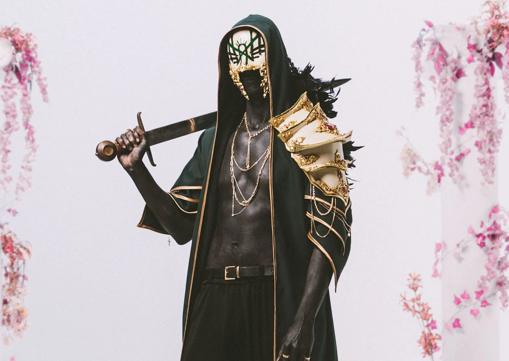

Sleep Token is a heavy metal band that combines elements of pop into their songs. Their band is entirely anonymous and they have created a fictional story about said band.
I personally enjoy this band a lot because of the general feeling I get when I listen to their songs. I enjoy the singer's voice, it's unique compared to the other bands I have listened to. Sleep Token also offers something new to the heavy metal scene that I haven't seen before so it feels very refreshing. What they do is incredibly new so there aren't any other bands out there that have been able to replicate their style.
Sleep Token 